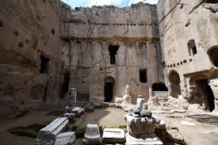
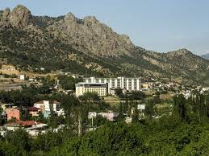
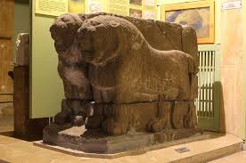
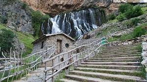

Medeniyetlerin yaşatıldığı, elmasıyla ünlü kadim şehir.
Niğde, Türkiye'nin İç Anadolu Bölgesi'nde, Kapadokya bölgesinin güneyinde yer alır. Hititlerden Roma'ya, Selçuklulardan Osmanlı'ya kadar pek çok medeniyete ev sahipliği yapmış tarihi bir kenttir. Doğusunda Aladağlar Milli Parkı ile doğa sporlarının merkezidir. Tarım alanında ise özellikle elması ve patatesi ile Türkiye genelinde büyük bir üne sahiptir.

Bizans döneminden kalma, eşsiz duvar resimlerine sahip kaya manastırı.

Şifalı suları ile bilinen bölgenin en önemli termal merkezi.

Prehistorik dönemden Osmanlı'ya kadar zengin bir koleksiyon.

Eşsiz buzul gölleri ve zirveleriyle doğa harikası.